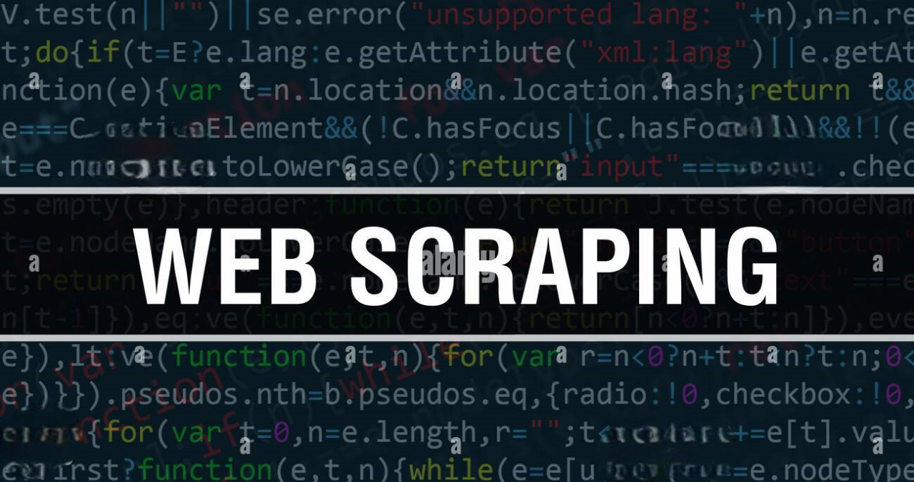

This project analyzes sales data using Python to uncover patterns, trends, and key performance indicators
By applying data cleaning, exploratory analysis, and visualization techniques.


This project explores lung cancer patient data to identify patterns and key risk factors using SQL. The analysis covers demographics, symptoms, and smoking history to better understand factors linked to lung cancer prevalence.
This project analyzes global student migration patterns using a combination of Python and MySQL. The goal is to uncover trends in international education.

The project demonstrates how to clean, transform, and standardize HR-related information stored in tabular format to make it ready for further insights and reporting.

This project involves building a web scraping solution using Python to extract relevant data from a real-world website.